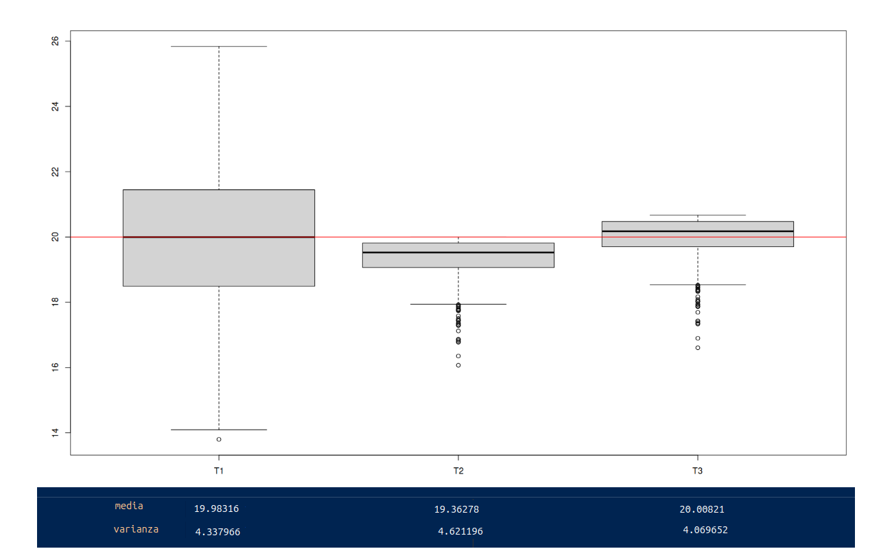

Propiedades de los estimadores
Métodos y Simulación Estadística
Los estimadores son variables aleatorias que toman su valor de los datos obtenidos en una muestra y que siguen una distribución conocida (distribuciones muestrales), pero además poseen propiedades deseables como son : insesgadez, eficiencia, consistencia entre otras. Con la figura 2.36 se representa de manera figurativa lo que pueden ser estas propiedades
 Figura 2.36 Caracteristicas de los estimadores (a) baja
varianza con sesgo (b) alta varianza con sesgo
Figura 2.36 Caracteristicas de los estimadores (a) baja
varianza con sesgo (b) alta varianza con sesgo (c) baja varianza sin sesgo (d) alta varianza sin sesgo.
En el centro se ubica el parámetro desconocido (punto blanco) y que tratamos de estimar utilizando para ello el estimador apropiado (figurativamente el arma que utilizamos). En la figura (\(a\)) tenemos el resultado de un arma (estimador 1) que aunque tiene una alta precisión ( poca varianza), presenta un desvío del centro (sesgo). En la figura (\(b\)) se presenta el resultado de otra arma (estimador 2) que al igual que la primera que presenta un desvío del centro (sesgo), presenta una mayor varianza. La figura (\(c\)) representa el arma ideal (no tiene sesgo y poca varianza) y por último la figura (\(d\)) que en promedio diríamos que está centrada (no sesgo), presenta una variación alta.
Estas caractaristicas ahora en los estimadores se presentan a continuación:
Insesgadez
Un estimador \(\widehat{\theta_{3}}\) se considera insesgado si \(E[\widehat{\theta_{3}}] = \theta\)
Está representado por las figuras 3 y 4 que presentan un comportamiento que en promedio aciertan al centro
Eficiente
Un estimador \(\widehat{\theta_{1}}\) se considera eficiente, cuando dentro de todos los estimadores insesgados presenta la menor varianza:
\[V[\widehat{\theta_{3}}] < V[\widehat{\theta_{4}}]\]
Consistente
Cuando un estimador siendo sesgado, se convierte en un estimador sesgado cuando se aumenta el tamaño de la muestra, se dice que este estimador es consistente
\[\lim_{n \to{+}\infty} E[\widehat{\theta}] = \theta\]
Ejemplo
Para una muestra obtenida de una población exponencial con parámetro \(\beta\) ( \(E[X]=\beta\), \(V[X]=\beta^{2}\)). Examinar los siguientes estimadores para una muestra de \(n=4\) (\(X_{1}\), \(X_{2}\), \(X_{3}\), \(X_{4}\))
- \(\widehat{\theta}_{1} = \dfrac{1}{6}(X_{1}+X_{2}) \dfrac{1}{3}(X_{3}+X_{4})\)
- \(\widehat{\theta}_{2} = \dfrac{1}{10}(X_{1}+2X_{2} + 3X_{3} + 4X_{4})\)
- \(\widehat{\theta}_{3} = \dfrac{1}{4}(X_{1} + X_{2} + X_{3} + X_{4})\)
Primero verifiquemos cuales de los estimadores son insesgados, para ello debemos obtener sus valores esperados:
\[\begin{eqnarray*} E\big[\widehat{\theta_{1}}\big] & = & E\Bigg[\dfrac{1}{6}(X_{1}+X_{2}) \dfrac{1}{3}(X_{3}+X_{4})\Bigg] \\ & = & \dfrac{1}{6}E\bigg[(X_{1}+X_{2})\bigg] \dfrac{1}{3} E\bigg[(X_{3}+X_{4})\bigg]\\ & = & \dfrac{1}{6}\bigg[ E\big[X_{1}\big]+E\big[X_{2}\big]\bigg] + \dfrac{1}{3} \bigg[ E\big[(X_{3}\big]+E\big[X_{4}\big]\bigg]\\ & = & \dfrac{1}{6}\bigg[ \beta+ \beta \bigg] + \dfrac{1}{3} \bigg[ \beta+ \beta \bigg]\\ & = & \dfrac{2 \beta}{6} + \dfrac{2 \beta}{3} = \beta \end{eqnarray*}\]
Concluimos que \(\widehat{\theta_{1}}\) es un estimador insesgado
Se puede verificar que :
\(\widehat{\theta_{2}}\) es un estimador insesgado
\(\widehat{\theta_{3}}\) también es un estimador insesgado
Para determinar el estimador eficiente se deben encontrar las varianza de los estimadores, para lo cual procedemos de la misma forma:
\[\begin{eqnarray*} V\big[\widehat{\theta_{1}}\big] & = & V\Bigg[\dfrac{1}{6}(X_{1}+X_{2}) \dfrac{1}{3}(X_{3}+X_{4})\Bigg] \\ & = & \dfrac{1}{36}V\bigg[(X_{1}+X_{2})\bigg] + \dfrac{1}{9} V\bigg[(X_{3}+X_{4})\bigg]\\ & = & \dfrac{1}{36}\bigg[ V\big[X_{1}\big]+V\big[X_{2}\big]\bigg] + \dfrac{1}{9} \bigg[ V\big[(X_{3}\big]+V\big[X_{4}\big]\bigg]\\ & = & \dfrac{1}{36}\bigg[ \beta^{2} + \beta^{2} \bigg] + \dfrac{1}{3} \bigg[ \beta^{2} + \beta^{2} \bigg]\\ & = & \dfrac{2 \beta^{2}}{36} + \dfrac{2 \beta^{2}}{9} = \dfrac{10 \beta^{2}}{36} \end{eqnarray*}\]
Se puede verificar que :
\(V\big[\widehat{\theta_{2}}\big] = \dfrac{30 \beta^{2}}{100}\)
\(V\big[\widehat{\theta_{3}}\big] = \dfrac{\beta^{2}}{4}\)
Los resultados indican que el estimador insesgado y eficiente es \(\widehat{\theta_{3}}\)

Figura 2.37 Resultados de simulación de estimadores con distribución exponencial \(\lambda = 1/4\)Como se muestra en la figura 2.37 las mejores propiedades las tiene el estimador \(\widehat{\theta_{3}}\), posee una valor medio muy proximo a 4 y la menor varianza entre los tres estimadores